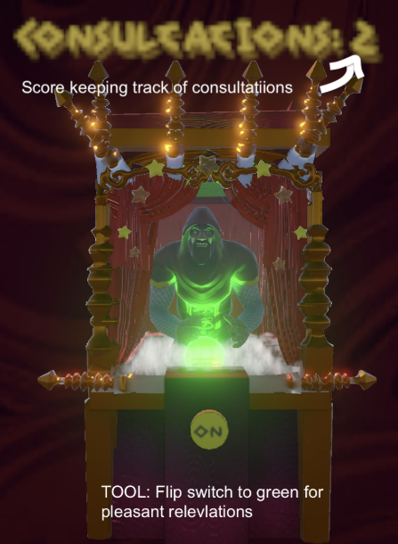
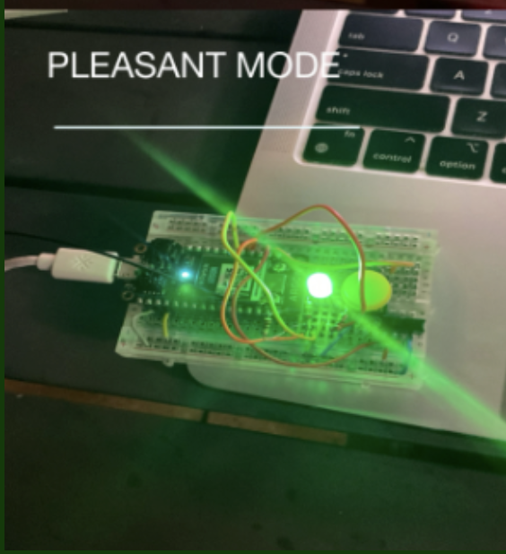
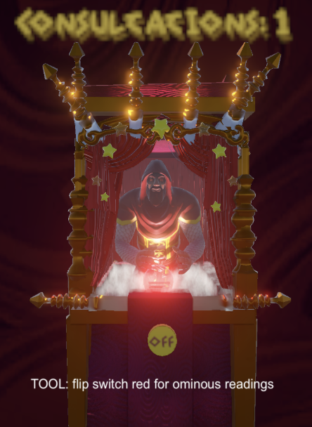
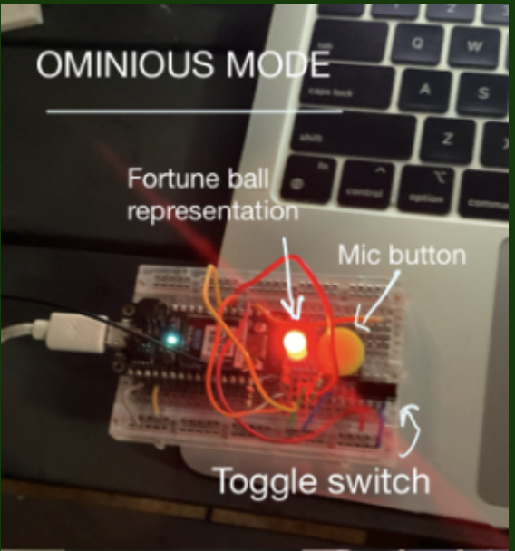
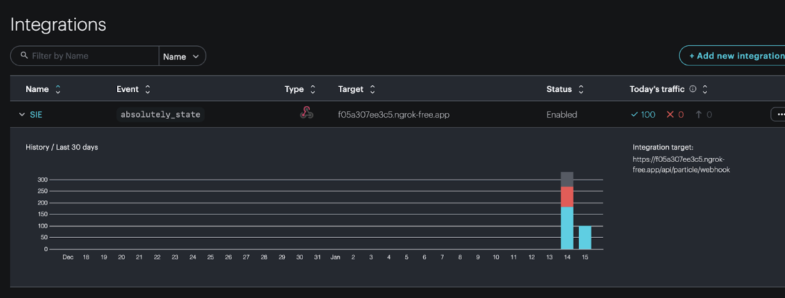
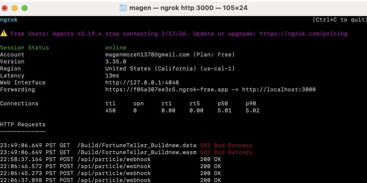
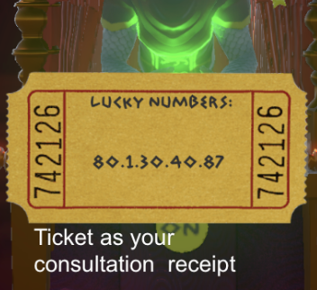

I Told You So.
Solo Game Jam | Game Engineering | WebGL | Node.Js | Unity | C# | IoT
- Original Tool-Based Game: Programmed a game from scratch featuring a tool with a fantastical twist.
- Unity WebGL + LLM Integration: Built a Unity WebGL game combining physical hardware input with voice-driven interaction using LLMs.
- Physical Input Choice: Players use a physical switch and button to select between reassuring or ominous fortunes.
- Real-Time Visual Feedback: Hardware state is reflected through synced green and red lighting with an RGB LED.
- Award Recognition: Received Honorable Mention at the PlayStation Career Pathways – Ratchet It Up Game Jam.
Pleasant Fortune

Correlating Particle Firmware 1

Ominious Fortune

Correlating Particle Firmware 2

Technical Stack
- Engine: Unity (WebGL)
- Hardware: Arduino / Particle microcontroller
- Firmware: C++ (Particle)
- Backend: Node.js (hardware polling, LLM, TTS)
- LLM: Ollama (local) and Groq (cloud)
- Audio: Text-to-speech fortune delivery
Particle Webhooks Stream Hardware Data (via ngrok) & Exposing Variables to Backend

ngrok Server Connectivity Status

Core Interaction & Scoring
- Preview Mechanic: Physical switch previews the fortune’s tone before committing to a reading.
- Commitment-Based Scoring: A consultation only counts if the player speaks and listens until the fortune finishes.
- No Partial Credit: Interrupting or stopping early does not increment the score.
- Intentional Design: Scoring reflects commitment rather than speed or accuracy.
- Tangible Outcome: Completed consultations print a fortune ticket with randomized lucky numbers.
Prints Lucky Numbers After Interaction
